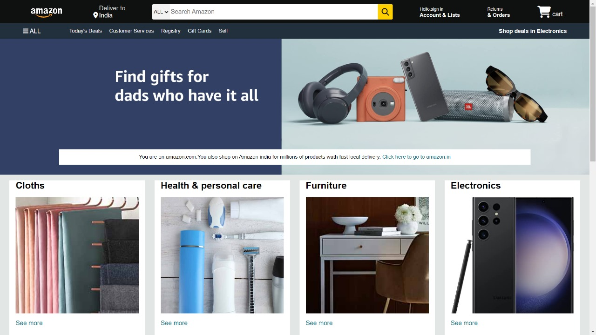
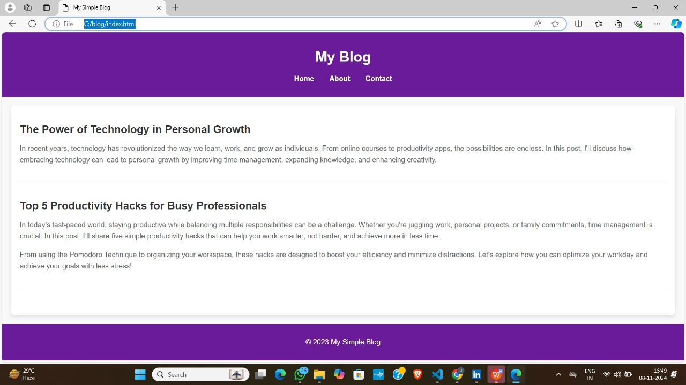

My projects



Web Developer | Designer | Tech Enthusiast
Chittiraju Jagadishwar is a passionate software developer specializing in web applications. As a recent graduate eager to embark on his professional journey, Chittiraju has developed a strong foundation in front-end technologies including HTML, CSS, and JavaScript, as well as back-end development with Python and database management. His comprehensive skill set enables him to build dynamic and user-friendly web solutions. Driven by a commitment to continuous learning and excellence, Chittiraju aims to secure a developer role where he can contribute to innovative projects and collaborate with talented teams. In his free time, he enjoys listening to music, which inspires his creativity and problem-solving abilities. Chittiraju is dedicated to leveraging his technical expertise and enthusiasm to make meaningful contributions to forward-thinking companies.